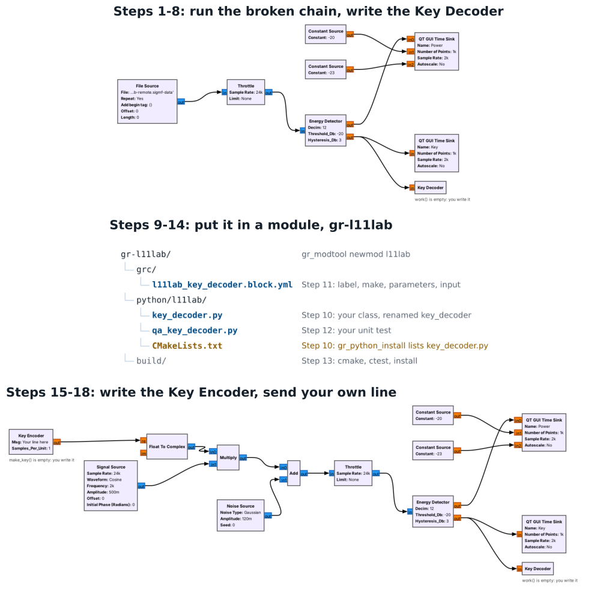
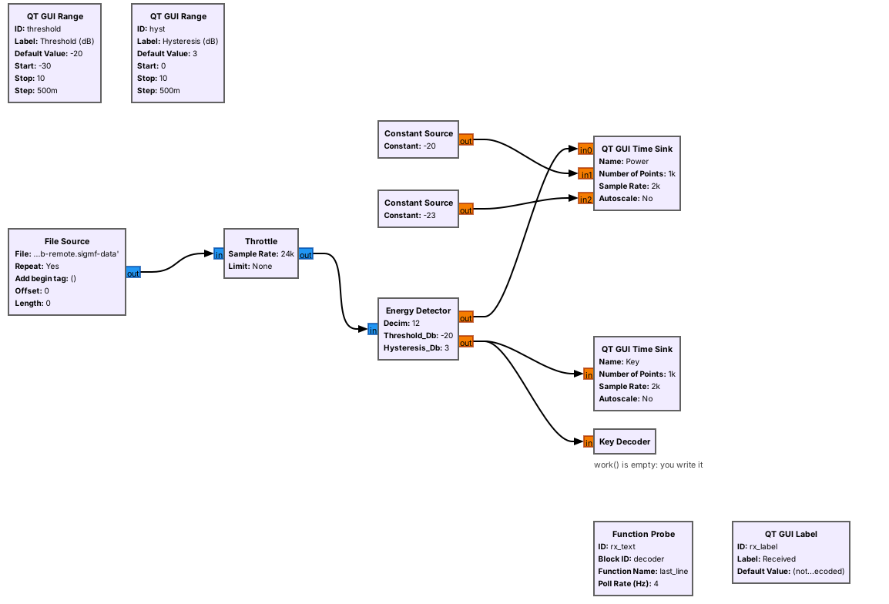
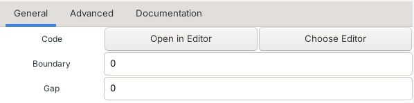
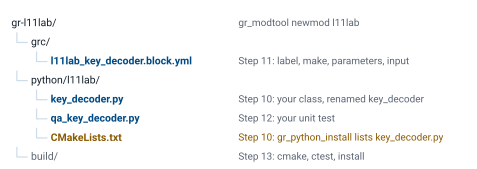
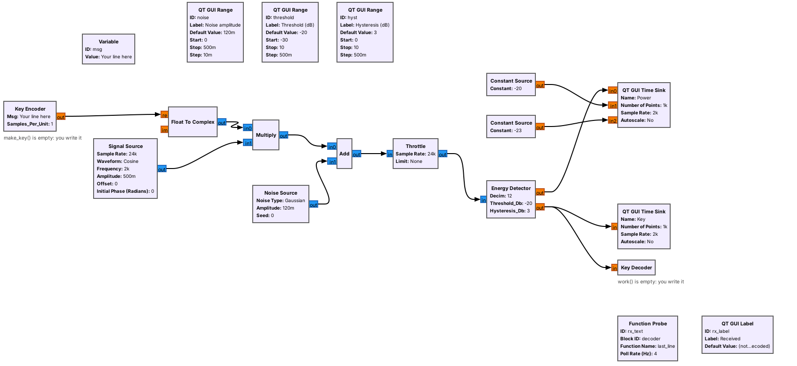

L11 Lab — Custom Block#
Custom Block
Work out a keyed recording’s code, write the block that reads it, and write the encoder that sends your own line.
L11 Lab · Module 5: Custom Blocks & Midterm · Dr. Neil Rogers
Learning Objectives
- I can create a GNU Radio out-of-tree (OOT) module and add a custom Python block to it.
- I can implement a custom signal-processing block from scratch and integrate it into a GNU Radio flowgraph.
The Big Picture

Steps 1 to 4 run L11-lab-rx.grc on L11-lab-remote.sigmf-data, a simulated on-off keyed transmitter at 915 MHz that sends one line of text four times, and read the code it uses off the Energy Detector’s key. Steps 5 to 8 write the work() of the flowgraph’s Key Decoder, an Embedded Python Block, until the line comes through. Steps 9 to 14 move the block into a module of your own with a unit test. Steps 15 to 18 write the transmitter’s half, a Key Encoder that sends your own line in the same code, and get that line through noise to your block. Your Part 1 answers go with Steps 4 and 6, the entries go in Tables A and B of the packet, and the screenshots go in Figures 1 to 4.
Predict First
Each key sends two characters after a long silence. In some keys the length of each mark carries the bit and every space is short; in others every mark is short and the length of the space after it carries the bit. Choose where you think the bit is and which length is a 0, then press Show the bytes. Changing the key or either choice hides the answer again. Each kind of key appears once with a short 0 and once with a long 0, and the lab’s lengths are different, so the same reasoning finds the lab’s 0 and the widget does not. A wrong choice reads as characters outside ASCII, the symptom Step 8 names.
Run the Broken Chain
Run
L11-lab-rx.grcon the recording: the key comes through, the text does not.Freeze and zoom the key, and read the lengths of its marks and spaces.
Work out which part carries the bits, and which length is a 0.

Run the chain. Put
L11-lab-remote.sigmf-data,L11-lab-remote.sigmf-meta, andL11-lab-rx.grcfrom the Lab Packet frame in one folder, open the flowgraph in GRC, and run it. The Energy Detector is the Lesson 11 block, here as an Embedded Python Block so the flowgraph runs on any laptop. The Received label stays at “(nothing decoded)”.Check the key. Every burst on the Power plot should be one mark on the Key plot. If the key stays on or misses bursts, set the Threshold (dB) slider halfway between the floor and the bursts, as in Lesson 11’s “Setting the Levels”.
Read the lengths. Middle-click the Key plot and choose Stop to freeze it, then drag a box to zoom in on a few dozen marks; the time axis is in milliseconds. Read the length of each kind of mark and each kind of space, including the long silence between two sendings of the line. Paste a screenshot of the zoomed key as Figure 1.
Work out the code. Decide whether the mark or the space carries the bit, and use your Part 1 answer about the first bit of every character to decide which length is a 0. Count bits from the end of the long silence, eight per character, to find where each character starts.
Write the Decoder
Turn the lengths into key samples at the key’s own rate.
Write
work(): a bit from each length, eight bits per character.Recover the line; screenshot your code beside the running window.

Choose the limits. The key runs at
samp_rate / decimsamples per second, so convert your Step 3 lengths to key samples. Choose a boundary that splits the two lengths of the part that carries the bit, and a gap, longer than any length inside a line and shorter than the silence between lines, that tells your block a line has ended.Write work(). Double-click the Key Decoder and press Open in Editor. Add
boundaryandgapto__init__()as arguments. Writework()so it counts how long the key holds each level, decides one bit each time the part that carries a bit ends, builds each character from eight bits, most significant first, and setsself.linewhen a line ends. Keep inselfeverything your Part 1 list says must survive from one call ofwork()to the next. Save, and enter your Step 5 values in the block’s properties, where GRC now shows the two arguments.Recover the line. Run the flowgraph. The Received label shows the line once the first sending ends, about 1.4 s in; the line ends with a newline, byte 10, as in Lesson 10. Record the line, and paste a screenshot of your
work()beside the running window as Figure 2.Fix the decoder if the text is wrong. Characters that are all outside ASCII point to the bit decision, since a reversed decision puts a 1 first and makes every byte 128 or more. Characters that go wrong from some point on, or one bit too many or too few at the end of a line, point to where your block starts a character or counts bits. Nothing at all points to the gap or to the code that sets
self.line. A Python error appears in GRC’s console at the bottom of the window, with the line number.
Put It in a Module
Make
gr-l11labwithgr_modtool, and add a sink block,key_decoder.Move your class in, fill in the YAML file, and write a unit test.
Build, test, install, and swap your block into the receiver.

Make the module. On a Windows laptop without WSL2, do Steps 9 to 14 on another cadet’s Linux, macOS, or WSL2 laptop and note it on the Documentation line. In a new folder at the radioconda prompt, run
gr_modtool newmod l11lab,cd gr-l11lab, andgr_modtool add -t sink -l python key_decoder. Give your name as the copyright holder and your two arguments with their Step 5 values as the argument list, and answer yes whengr_modtoolasks whether to add Python QA code.Move the class in. Copy your class from the Embedded Python Block into
python/l11lab/key_decoder.py, namedkey_decoderinstead ofblk, and check that thegr_python_install(FILES ...)line ofpython/l11lab/CMakeLists.txtlistskey_decoder.py, as Lesson 11’s “The Module Tree” warns. Without it, the module installs without your block and Python reports aModuleNotFoundError.Fill in the YAML file. In
grc/l11lab_key_decoder.block.yml, give the block the label Key Decoder, amaketemplate with both arguments, anintparameter for each, and onefloatinput, as in Lesson 11’s “The Block’s YAML File”.Write the test. In
python/l11lab/qa_key_decoder.py, replace the template’s test with one that builds the key for a short word of your own in the lab’s code, at the key’s own rate, runs it from a Vector Source into your block, and checkslast_line(). End the key with a silence longer than your gap, so your block knows the line has ended.Build and test. Build, run
ctest --output-on-failure, and install, as in Lesson 11’s “Build, Test, and Install”, then restart GRC, which reads its block library only when it starts. Paste your test’s key lines and thectestoutput as Figure 3.Swap it in. In
L11-lab-rx.grc, disable the Embedded Key Decoder, add your Key Decoder from the L11 Lab category of the block library, and set its ID todecoder: the Function Probe behind the Received label reads the block with that ID. Connect the key to it and run, and the line arrives as before. If the block is missing from the library, check that you installed from the same radioconda prompt that runs GRC.
Send Your Own Line
Put your module’s block in
L11-lab-link.grc.Write the Key Encoder’s
make_key()to send your own line in the lab’s code.The link adds noise: diagnose why the line does not arrive, and fix it.

Open the link. Open
L11-lab-link.grc, disable its Embedded Key Decoder, and add your Key Decoder with IDdecoderand your Step 5 values, as in Step 14.Write the encoder. Double-click the Key Encoder and open it in the editor. Write
make_key()so it returns the key formsgand its newline, one entry per unit of your code, 1 for a mark and 0 for a space, ending with the silence between sendings. Set Samples per unit to the number of 24 kHz samples in one unit of your code, set themsgvariable to a line of your own, up to 40 characters, and run it.Diagnose. With the Noise amplitude slider where it opens, your line does not arrive. Use the Power and Key plots to work out why, and paste a screenshot of the window, with your
make_key()beside it, as the left pane of Figure 4.Fix it. Change what your diagnosis points to, in the sliders or in your block, until the Received label shows your line on every sending you watch for 20 s, with no garbled line between. Record what you changed, and paste a screenshot as the right pane of Figure 4.
No Hardware?
This lab needs no radio
Every flowgraph here runs on your laptop from the recording or from a simulated link, and nothing transmits, so a missing or broken PlutoSDR does not matter today.
Your Part 2 Entries
This frame collects every box you filled in on this page. Your entries stay in this browser only, saved as you type. Download my packet writes them into the Measured cells of the blank packet and saves the PDF. The download locks every field, the Predicted cells included, so type your Part 1 answers into your own copy of the packet first, then use Fill my own copy and choose that file: the page keeps your answers and adds your entries beside them. Paste Figures 1 to 4 and write Part 3 in your copy, or on the printout, and upload one PDF to Gradescope. Export entries saves a small backup file you can Import on another laptop.
Lab Packet
The L11 Lab packet is one submission, turned in complete by the Gradescope date, before the midterm:
Part 1, Predict (individual, before the lab period): the two shaded entries, with your reasoning.
Part 2, Measure (in class, on your own laptop): the white cells of Tables A and B, and Figures 1 to 4.
Part 3, Analyze (individual, after the lab): three prompts, each answered from your own tables, code, and figures.
L11-lab-remote.sigmf-data and L11-lab-remote.sigmf-meta, the recording you decode
L11-lab-rx.grc: the receiver, with the Key Decoder’s
work()emptyL11-lab-link.grc: the link, with the Key Encoder’s
make_key()and the Key Decoder’swork()empty
For Part 3
Do Part 3 after class, with your tables, code, and figures beside you. It asks about three things:
How your block in Figure 2 turns the key in Figure 1 into characters, what it does when a mark or space spans two calls of
work(), and what your test in Figure 3 leaves unchecked.Whether the receivers of Lessons 8 and 10 could have read the key in Figure 1, and what your block does differently.
The two panes of Figure 4: what kept your line from arriving, and where the fix belongs.
I grade each answer on a claim, the evidence from your own tables, code, and figures, the reasoning that connects them, and the uncertainty in your readings.
Looking Ahead
Lesson 12 receives Morse code, another key whose meaning is in its timing.